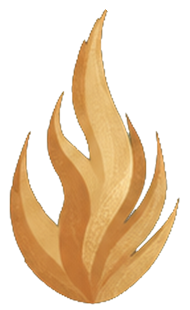

¡Un nuevo año comienza! Estoy muy contenta de presentarte esta edición, que hemos preparado con especial ilusión y que tiene como protagonista a Dios Espíritu Santo.
Mi deseo es que estas páginas te acompañen no solo a organizar tus días, sino también a disponer tu corazón para escuchar la voz de Dios, reconocer su acción en tu vida y responder con generosidad a sus inspiraciones. Por eso, este año queremos aprender a vivir bajo la guía del dulce Huésped del alma, haciendo nuestras aquellas palabras de Samuel:
Pero ¿cómo aprendemos a escuchar al Señor en medio de tantos pensamientos, deseos y preocupaciones? ¿Cómo distinguir una verdadera inspiración de aquello que nace de nuestros propios impulsos?
El primer paso es hacer silencio. No necesariamente un silencio exterior perfecto, sino esa disposición interior que nos permite detenernos, entrar en oración y presentarnos ante Dios con un corazón abierto. En el silencio podemos mirar lo que sucede en nuestro interior y ponerlo delante de Él.

San Ignacio de Loyola nos enseña que, en nuestra vida espiritual, experimentamos distintos movimientos interiores: pensamientos, deseos y sentimientos que pueden acercarnos a Dios o alejarnos de Él. Aprender a reconocerlos y comprender hacia dónde nos conducen es parte del discernimiento espiritual. San Ignacio llama consolación a aquellos movimientos que nos hacen crecer en la fe, la esperanza y la caridad, y que nos orientan hacia Dios. La desolación, en cambio, puede manifestarse como oscuridad interior, inquietud o desaliento que debilita nuestra vida espiritual. No se trata simplemente de estar alegres o tristes: incluso en medio del dolor podemos experimentar una profunda cercanía con Dios, y una emoción agradable no siempre significa que estemos eligiendo el bien.
Por eso, ante una moción interior, podemos detenernos y preguntarnos: ¿hacia dónde me conduce esto? ¿Me ayuda a amar más a Dios y al prójimo? ¿Es coherente con el Evangelio? ¿Qué frutos puede producir esta decisión? El discernimiento requiere oración, conocimiento de la Palabra de Dios, examen sincero del corazón y, cuando sea necesario, acompañamiento espiritual. No siempre encontraremos una respuesta inmediata; a veces, escuchar también significa esperar con paciencia y confiar.
Que este año no te falte el silencio para escuchar, la sabiduría para discernir ni la generosidad para responder. Que el Espíritu Santo ilumine tus decisiones, fortalezca tu voluntad y te enseñe a reconocer la presencia de Dios incluso en los pequeños acontecimientos cotidianos. Y que, al terminar este año, puedas mirar el camino recorrido y descubrir cuánto ha obrado su gracia en ti.
Que sea un año de docilidad, crecimiento y fidelidad al Señor.
Ven, Espíritu Santo, envía tu luz desde el cielo.
Padre amoroso del pobre; don, en tus dones espléndido;
luz que penetra las almas; fuente del mayor consuelo.
Ven, dulce huésped del alma, descanso de nuestro esfuerzo,
tregua en el duro trabajo, brisa en las horas de fuego,
gozo que enjuga las lágrimas y reconforta en los duelos.
Entra hasta el fondo del alma, divina luz, y enriquécenos.
Mira el vacío del hombre si Tú le faltas por dentro;
mira el poder del pecado cuando no envías tu aliento.
Riega la tierra en sequía, sana el corazón enfermo,
lava las manchas, infunde calor de vida en el hielo,
doma el espíritu indómito, guía al que tuerce el sendero.
Reparte tus siete dones según la fe de tus siervos.
Por tu bondad y tu gracia dale al esfuerzo su mérito;
salva al que busca salvarse y danos tu gozo eterno.
Amén.
El Espíritu Santo no es una fuerza impersonal ni una energía que podamos controlar. Es la tercera Persona de la Santísima Trinidad, verdadero Dios junto al Padre y al Hijo. Jesús lo promete a sus discípulos como el Paráclito, aquel que permanece con ellos y los conduce a la verdad.
Conocer al Espíritu Santo es entrar en una relación más profunda con Dios, reconocer su presencia y aprender a vivir como hijos suyos.